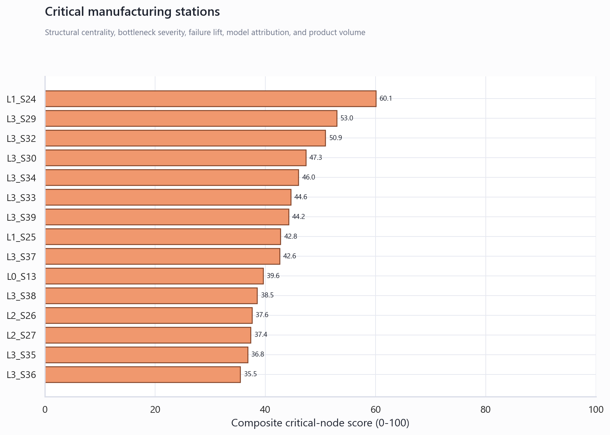
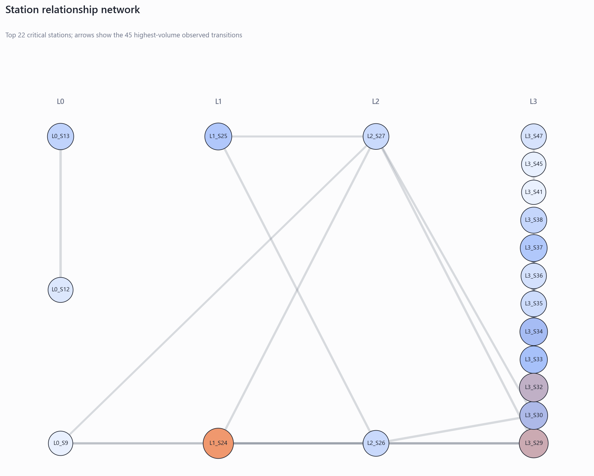
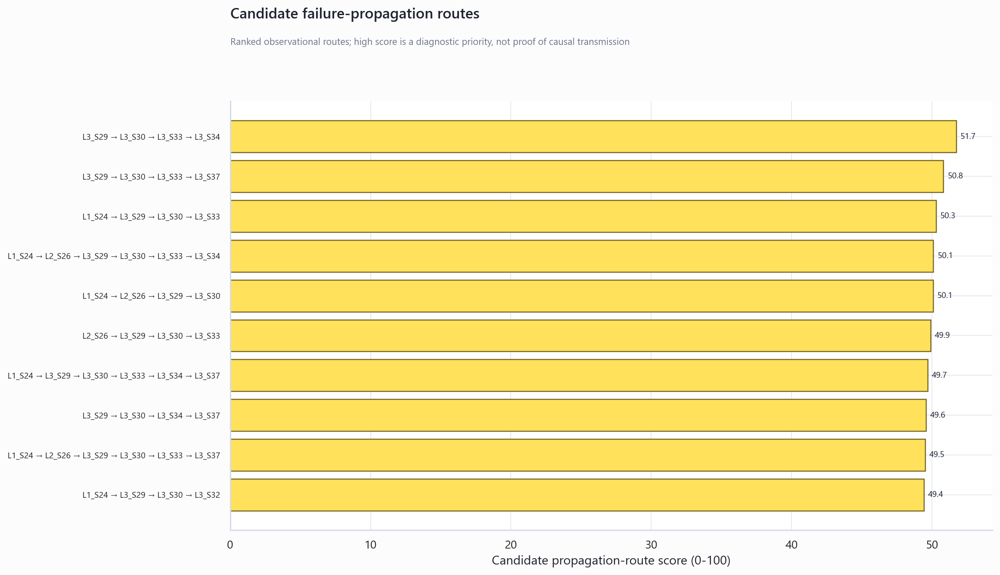

Phase 9: Manufacturing Knowledge Graph
Technical summary
The graph connects production lines, stations, raw numeric/categorical/date features, observed station transitions, and the production-safe model's failure evidence. L1_S24 is the highest-ranked critical station with a composite score of 60.1.
The top candidate propagation route is L3_S29 → L3_S30 → L3_S33 → L3_S34. It is a prioritized investigation path, not proof that one station physically caused a later failure.
Critical nodes combine operational and model evidence
The score balances bottlenecks, observed failure lift, station-level SHAP attribution, network centrality, and product volume. This makes the ranking suitable for investigation queues without treating any one signal as a root-cause verdict.

Station relationships reveal influential transfer points
PageRank emphasizes stations receiving flow from other influential stations, while betweenness highlights bridges that sit on many high-volume paths. The network view limits itself to the most critical nodes so labels and direction remain readable.

Candidate propagation routes focus engineering investigation
Routes are ranked from transition volume, transition-level failure rate, and critical-node evidence. Engineers should validate the route against sensor history, maintenance logs, product family, and timestamps before taking action.

Scope and definitions
The hierarchy covers deduplicated raw feature metadata from numeric, categorical, and date datasets. Failure associations use absolute SHAP values from the production-safe Phase 6 LightGBM model. Station relationships use Phase 8 transitions reconstructed from raw train and test date files; failure rates use labeled training products only.
Methodology and audit tables
| critical_rank | station | critical_node_score | centrality_score | bottleneck_score | failure_lift | station_shap_importance |
|---|---|---|---|---|---|---|
| 1.000 | L1_S24 | 60.084 | 0.091 | 74.372 | 1.475 | 0.262 |
| 2.000 | L3_S29 | 52.954 | 0.640 | 54.275 | 1.042 | 0.000 |
| 3.000 | L3_S32 | 50.897 | 0.127 | 40.179 | 8.031 | 0.068 |
| 4.000 | L3_S30 | 47.343 | 0.502 | 50.161 | 1.043 | 0.000 |
| 5.000 | L3_S34 | 46.018 | 0.612 | 34.150 | 0.914 | 0.000 |
| 6.000 | L3_S33 | 44.627 | 0.507 | 41.447 | 0.887 | 0.000 |
| 7.000 | L3_S39 | 44.236 | 0.500 | 51.848 | 0.901 | 0.000 |
| 8.000 | L1_S25 | 42.763 | 0.068 | 88.337 | 0.903 | 0.023 |
| 9.000 | L3_S37 | 42.579 | 0.559 | 26.860 | 1.043 | 0.000 |
| 10.000 | L0_S13 | 39.598 | 0.241 | 58.956 | 0.974 | 0.000 |
| 11.000 | L3_S38 | 38.520 | 0.142 | 70.631 | 1.392 | 0.002 |
| 12.000 | L2_S26 | 37.588 | 0.184 | 55.505 | 1.331 | 0.000 |
| propagation_rank | candidate_route | route_score | minimum_transition_count | mean_transition_failure_rate_pct |
|---|---|---|---|---|
| 1.000 | L3_S29>L3_S30>L3_S33>L3_S34 | 51.722 | 965,844.000 | 0.507 |
| 2.000 | L3_S29>L3_S30>L3_S33>L3_S37 | 50.805 | 654,274.000 | 0.520 |
| 3.000 | L1_S24>L3_S29>L3_S30>L3_S33 | 50.282 | 25,747.000 | 0.744 |
| 4.000 | L1_S24>L2_S26>L3_S29>L3_S30>L3_S33>L3_S34 | 50.088 | 243,524.000 | 0.630 |
| 5.000 | L1_S24>L2_S26>L3_S29>L3_S30 | 50.074 | 243,524.000 | 0.734 |
| 6.000 | L2_S26>L3_S29>L3_S30>L3_S33 | 49.894 | 257,914.000 | 0.610 |
| 7.000 | L1_S24>L3_S29>L3_S30>L3_S33>L3_S34>L3_S37 | 49.687 | 25,747.000 | 0.636 |
| 8.000 | L3_S29>L3_S30>L3_S34>L3_S37 | 49.572 | 264,184.000 | 0.576 |
| 9.000 | L1_S24>L2_S26>L3_S29>L3_S30>L3_S33>L3_S37 | 49.512 | 243,524.000 | 0.638 |
| 10.000 | L1_S24>L3_S29>L3_S30>L3_S32 | 49.427 | 25,747.000 | 2.040 |
Limitations and uncertainty
Recommended next steps
- Inspect the top critical stations and routes by product family and time window.
- Join future maintenance, alarm, calibration, and operator-event data to graph nodes.
- Track whether corrective actions reduce failure lift and bottleneck scores.
Further questions
Do the same routes remain critical after controlling for product family? Which nodes align with known machine ownership and maintenance events? Can future timestamp data provide true event durations rather than relative-time proxies?